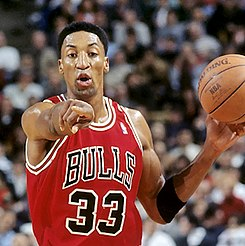
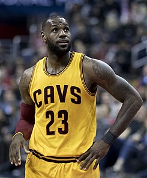
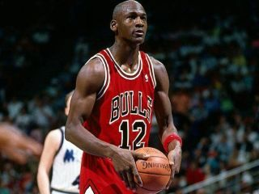

El baloncesto, basquetbol o básquetbol (del inglés basketball; de basket, 'canasta', y ball, 'pelota') o simplemente básquet,1 es un deporte de equipo, jugado entre dos conjuntos de cinco jugadores cada uno durante cuatro períodos o cuartos de diez2 o doce minutos cada uno. El objetivo del equipo es anotar puntos introduciendo un balón por la canasta, un aro a 3,05 metros sobre la superficie de la pista de juego del que cuelga una red. La puntuación por cada canasta o cesta es de dos o tres puntos, dependiendo de la posición desde la que se efectúa el tiro a canasta, o de uno, si se trata de un tiro libre por una falta de un jugador contrario. El equipo ganador es el que obtiene el mayor número de puntos.
Sitio oficial NBA 
A veces el mayor desafío de un jugador viene en relación con su papel en el equipo. (Scottie Pippen)

No puedes tener miedo de fracasar. Es la única forma en la que triunfas, no vas a triunfar siempre, lo sé. (LeBron James)

El talento gana partidos, pero el trabajo en equipo y la inteligencia ganan campeonatos. (Michael Jordan)